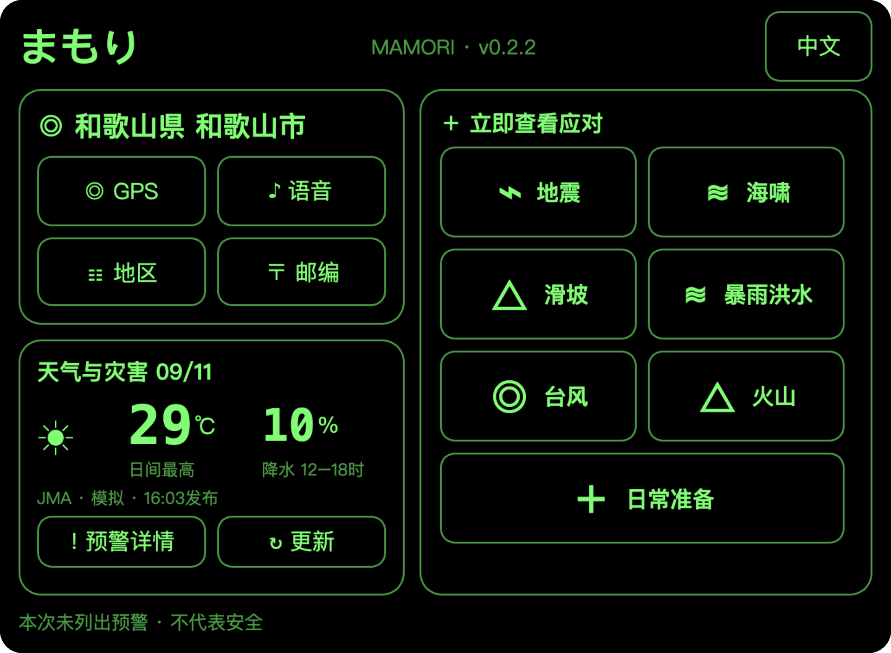
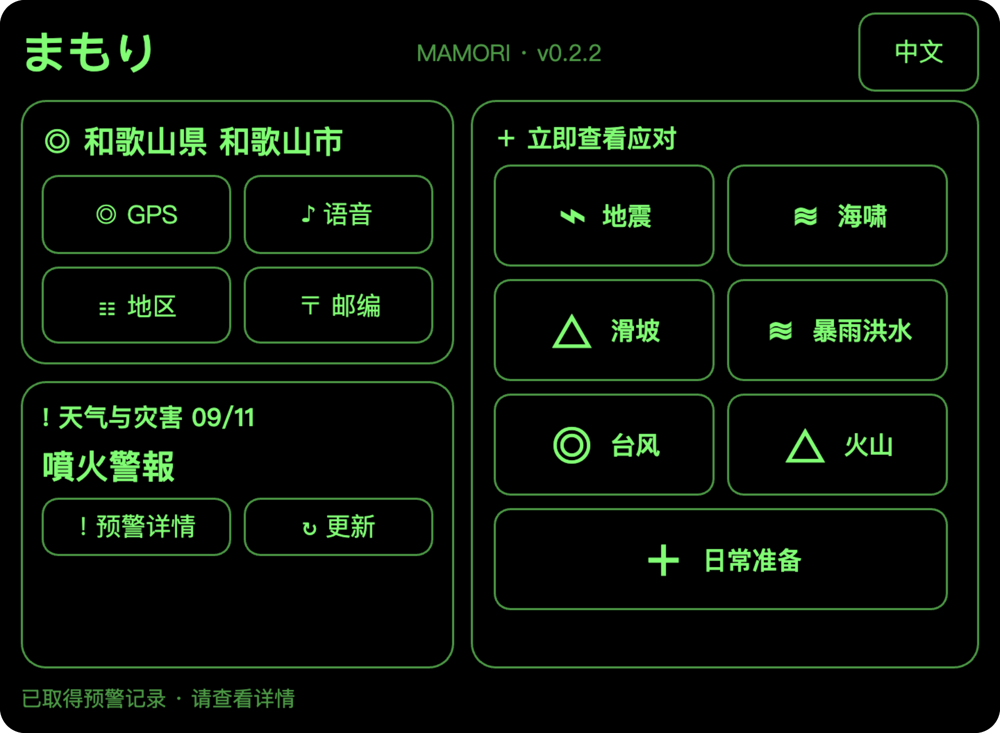
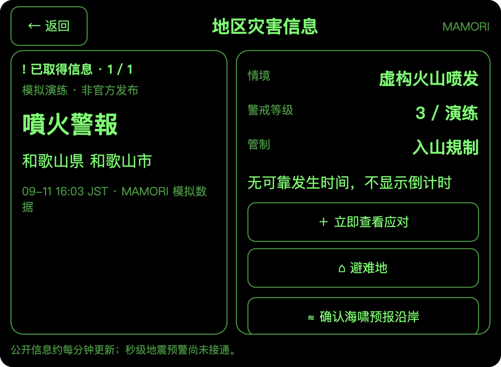
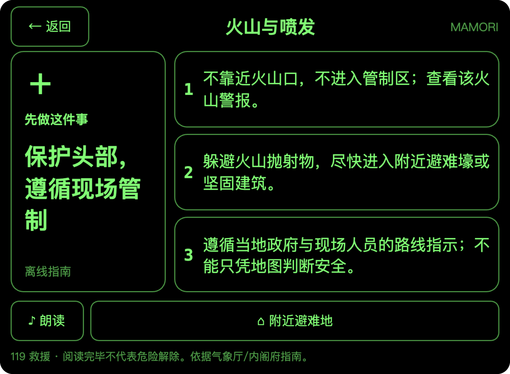

守
まもり MAMORIRokid Glasses 日本防灾智能体
真实 Ink 页面截图
开发原型 · 情境模拟
开发原型 · 情境模拟
火山 · 虚构演练
看清警戒，遵循管制。
和歌山县 · 虚构情境
日常看天气 · 做准备

日常首页天气与准备
灾害情境首页提示 → 灾害详情 → 行动指南



!
警戒信息前置首页直接显示火山警报
△
等级与管制分列明确当前应对依据
＋
关键行动同屏关注警报与现场指示
和歌山及周边无活火山；本图为虚构演练，不代表当地风险。首页灾害态为跳转前暂停截图。